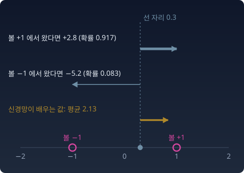
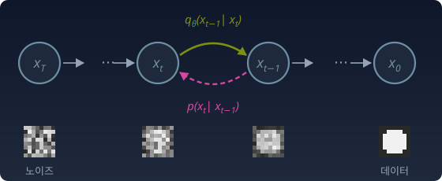

잡음 제거 스코어 매칭: 노이즈를 섞은 기록으로 레이더를 만든다
역방향 식에 필요한 새 재료는 각 안개 수준의 스코어 하나였다. 그런데 우리는 진짜 스코어를 모른다. 손에 있는 것은 이미지들뿐이다. 모르는 것을 신경망 sθ(x, t)에게 어떻게 흉내 내라고 가르칠까? 노이즈를 직접 섞어 본 기록만으로 그렇게 할 수 있다.
레이더 제작법 — 과거 대회의 기록
진짜 문제는 드래곤볼의 정확한 위치를 모른다는 것이다. 가진 건 과거 대회의 기록뿐이다. 기록 한 줄은 「이 볼에서 출발해 안개 속으로 이만큼 떠밀려 간 사람이 이 지점에 서 있었다」는 내용이다. 그 사람에게 "돌아가는 방향"은 분명하다. 자기가 떠나온 볼 쪽이다. 이 기록들로 신경망을 훈련시킨다. 임의의 (지점, 안개 수준) 쌍에서 "레이더가 가리켜야 할 방향"을 추정하게 만든다. 기록은 얼마든지 만들 수 있다. 이미지 한 장을 골라 노이즈를 섞기만 하면 한 줄이 생긴다.
잡음 제거 스코어 매칭
기록 하나는 (x₀, z, t) 세 개로 이루어진다. 볼 x₀, 노이즈 z, 안개 수준 t. 그 사람이 서 있던 곳은 xt = x₀ + σtz 이고, 그 한 사람에게 맞는 레이더 방향은 가우시안 커널의 스코어다.
여기서 조심할 것이 있다. 타깃 −(xt − x₀)/σt² 는 조건부 스코어다. "이 사람은 볼 x₀에서 왔다"를 알 때의 방향이다. 그런데 신경망은 x₀를 보지 못한다. 보는 것은 xt와 t뿐이다. 같은 지점에 서로 다른 볼에서 온 사람들이 겹쳐 서 있으면, 신경망은 그들의 방향을 하나로 답할 수밖에 없다. 제곱 오차를 최소로 하는 하나의 답은 평균, 곧 조건부 기댓값이다.

두 번째 등호가 트위디 공식을 스코어 쪽으로 적은 것이다. 조건부 방향들의 평균이 주변 스코어, 곧 어느 볼에서 왔는지 모르는 채 모두 합친 분포의 스코어다. 그래서 진짜 스코어를 한 번도 보지 않고도, 노이즈를 섞어 본 기록만으로 진짜 레이더를 배운다. 이것이 파스칼 뱅상(Pascal Vincent)이 보인 잡음 제거 스코어 매칭이다.
파이썬
위 그림의 숫자를 표본으로 확인한다. 데이터는 다시 봉우리가 둘인 가장 단순한 분포, −1과 +1 두 점(반반)이다.
import numpy as np
rng = np.random.default_rng(0)
# 잡음 제거 스코어 매칭의 최소해 = 주변 스코어
# 데이터 ±1, 안개 σ=0.5. 조건부 타깃 −(x_σ − x)/σ² 를 x_σ 구간별로 평균낸다.
sigma, n = 0.5, 4_000_000
x = rng.choice([-1.0, 1.0], n)
xs = x + sigma * rng.normal(size=n)
target = -(xs - x) / sigma**2
for y in [0.0, 0.3, 1.0]:
near = np.abs(xs - y) < 0.02
print(f"y={y}: 조건부 타깃 평균 {target[near].mean():6.3f} "
f"주변 스코어 {(np.tanh(y / sigma**2) - y) / sigma**2:6.3f}")
# y=0.0: 조건부 타깃 평균 -0.028 주변 스코어 0.000
# y=0.3: 조건부 타깃 평균 2.112 주변 스코어 2.135
# y=1.0: 조건부 타깃 평균 -0.003 주변 스코어 -0.003
y = 0.3의 조건부 타깃은 +2.8(볼 +1에서 온 사람)과 −5.2(볼 −1에서 온 사람) 둘뿐인데, 평균은 2.1이다. 구간 폭 0.02 때문에 생기는 작은 치우침을 빼면 주변 스코어와 맞는다.
ML에서: 실제 모델은 노이즈를 맞힌다
이미지 디퓨전 모델은 보통 레이더 방향 대신 섞인 노이즈 자체를 맞히도록 학습한다. 호(Jonathan Ho) 외(2020)의 DDPM은 같은 일을 노이즈 z를 맞히는 문제 ‖εθ − z‖²로 쓴다. εθ는 신경망이 어림한 노이즈다. 둘 사이는 εθ = −σt sθ 로 옮겨진다. 안개 수준마다 이 오차에 어떤 비중을 줄지는 정하기 나름인데, 호 외는 이론이 말하는 비중을 떼어 내고 모든 수준을 같은 비중으로 더한 단순한 손실이 더 보기 좋은 그림을 만든다는 것을 실험으로 보였다. 노이즈 어림을 레이더나 원래 이미지의 어림으로 바꾸는 계산은 아래 문제 13에서 한다.
인물 이야기 — 아포 히바리넨과 파스칼 뱅상: 정규화 상수 없이 배우는 법
2005년 핀란드 헬싱키 대학의 아포 히바리넨(Aapo Hyvärinen)은 오래된 골칫거리를 붙들고 있었다. 이미지 같은 데이터를 다루는 모델 가운데에는 밀도를 상수배까지만 적을 수 있는 것이 많은데, 정규화 상수 Z를 모르면 우도(모형이 데이터에 준 확률)를 계산할 수 없다. 그때까지는 마르코프 사슬 몬테카를로(무작위 걸음으로 표본을 뽑아 적분을 어림하는 방법)로 돌아가거나 Z를 근사해야 했는데, 앞의 것은 아주 느렸다. 그가 학술지 JMLR 에 낸 논문 「Estimation of Non-Normalized Statistical Models by Score Matching」의 생각은 단순했다. 모델의 로그 밀도 기울기와 데이터의 로그 밀도 기울기의 제곱 거리를 줄이자. 기울기에는 Z가 들어 있지 않다. 남은 걸림돌은 데이터의 기울기를 모른다는 것이었는데, 그는 부분적분으로 이 항을 지워 모델 쪽 미분만 남는 식을 얻었다. 대신 그 식에는 로그 밀도를 두 번 미분한 값이 들어 있어서, 차원이 큰 신경망에서는 계산이 무거웠다.
몇 해 뒤 몬트리올 대학의 파스칼 뱅상은 전혀 다른 쪽에서 같은 자리에 닿았다. 그가 연구하던 것은 일부러 노이즈를 섞은 입력에서 원래 입력을 되살리도록 훈련하는 신경망, 곧 잡음 제거 오토인코더였다. 2010년 12월 기술 보고서로 먼저 내고 학술지 Neural Computation 에 실린 짧은 글 「A Connection Between Score Matching and Denoising Autoencoders」에서 그는 이 훈련 목표가 노이즈로 번진 데이터 분포에 대한 스코어 매칭과 같다는 것을 보였다. 이 길에는 두 번 미분이 필요 없다. 노이즈를 섞고 원래 쪽을 가리키게 하면 된다. 이 절에서 본 「조건부 방향의 평균이 주변 스코어」가 그 증명의 핵심이다. 디퓨전 모델은 이 두 사람이 깔아 둔 길 위에, 안개를 한 수준이 아니라 여러 수준으로 섞는 생각을 얹은 것이다.
호기심 상자 — 모든 안개 수준을 합치면 KL로 돌아온다
이 사영은 무엇으로 재는가
제곱 오차의 최솟값이 조건부 기댓값이라는 사실은 "xt의 함수들이 이루는 공간 위로의 직교사영"이라는 기하학적 사실이다. 분포를 모형 위로 옮기는 사영과 모양이 같다. 큰 세계의 대상을 작은 세계의 가장 가까운 점으로 옮긴다. 다만 자가 다르다. 분포를 모형 위로 옮기는 두 사영, 곧 KL(q‖p)을 줄이는 e-사영과 KL(p‖q)을 줄이는 m-사영은 KL 발산(두 분포가 같은 사건에 매기는 확률이 얼마나 다른지 재는 양)으로 가까움을 잰다. 스코어 매칭은 두 스코어 필드의 제곱 차이를 pt로 평균 낸 양, 피셔 발산으로 잰다.
그러면 KL과는 아무 관계가 없을까. 있다. 그것도 아주 깊이. p와 q에 똑같이 안개를 더해 가면 둘은 점점 구분이 안 되고, KL은 줄어든다. 그 줄어드는 속도가 정확히 피셔 발산의 절반이다.
드 브루인 항등식(엔트로피, 곧 분포의 평균 놀라움이 노이즈에 따라 변하는 속도가 피셔 정보, 곧 스코어 크기의 제곱을 평균 낸 값이라는 식)의 KL판이다(시웨이 류(Siwei Lyu), 2009). 두 번째 식은 첫 번째를 τ = 0부터 ∞까지 적분한 것이다. 안개가 무한히 짙으면 둘 다 같은 흐린 가우시안이 되어 KL이 0이다. 모든 안개 수준에서 스코어 매칭을 알맞은 비중으로 합하면, 그것이 곧 KL을 줄이는 일, 최대우도(모형이 데이터에 주는 확률을 가장 크게 하기)가 된다. 안개 수준 하나의 스코어 매칭은 KL로 재는 사영과 자가 다르지만, 모든 안개 수준을 합치면 같은 KL로 돌아온다.
파이썬
import numpy as np
rng = np.random.default_rng(0)
# 드 브루인 꼴: 안개가 짙어질 때 KL 이 줄어드는 속도 = −½ × 피셔 발산
# p = N(0,1), q = N(1,4) 에 똑같이 분산 τ 의 노이즈를 더한다.
def kl(m1, v1, m2, v2):
return 0.5 * (np.log(v2 / v1) + (v1 + (m1 - m2)**2) / v2 - 1)
tau, h, n = 0.5, 1e-4, 4_000_000
dkl = (kl(0, 1 + tau + h, 1, 4 + tau + h) - kl(0, 1 + tau - h, 1, 4 + tau - h)) / (2 * h)
y = rng.normal(0, np.sqrt(1 + tau), n)
fisher_div = np.mean((-y / (1 + tau) + (y - 1) / (4 + tau))**2)
print(f"dKL/dτ = {dkl:.4f} −½·피셔 발산 = {-0.5 * fisher_div:.4f}")
# dKL/dτ = -0.1728 −½·피셔 발산 = -0.1728
변분추론으로 보기 — DDPM의 ELBO
호 외(2020)는 같은 모델을 변분추론으로 유도했다. 데이터의 로그 우도가 넘을 수 없는 아래 경계인 ELBO(증거 하한)를 올리는 방식이다. 순방향 과정 x₀ → x₁ → … → xT를 잠재변수(직접 관측되지 않고 모델 안에만 있는 변수)로 보고, 역방향 모형 qθ(xt−1 | xt)를 학습한다. (문헌에서는 순방향을 q, 모형을 pθ로 쓴다. 이 책은 p = 현실, q = 모형을 지키므로 이름을 바꿨다.)

변분추론과 같은 구조다. 잠재변수의 사후분포를 정확히 못 구하니, 하한을 올린다. 가운데 KL 항들은 가우시안끼리의 KL이라 평균의 차이만 남고, 정리하면 앞의 잡음 제거 스코어 매칭(노이즈 맞히기)에 시간별 비중을 붙인 것이 된다. 위 「ML에서」 소절에서 호 외가 떼어 낸 비중이 바로 이것이다. 킹마(Diederik Kingma)와 가오(Ruiqi Gao)(2023)는 흔히 쓰는 디퓨전 손실들이 모두 "노이즈 수준별 ELBO에 비중을 붙여 적분한 것"으로 읽힌다는 것을 보였다. 앞의 KL 적분식과 같은 이야기를 변분추론 쪽에서 한 것이다.
대응표
| 드래곤볼 찾기 | 디퓨전 모델 | 닮은 개념 |
|---|---|---|
| 드래곤볼 7개 | 데이터 분포의 봉우리(모드)들 | 매니폴드 가설 (볼이 놓인 곳) |
| 전파 강도 지도 | 확률밀도 p(x) | 혼합분포 |
| 전파가 약해지는 모양 | 가우시안 커널 | — |
| 레이더 바늘 방향 | 스코어 ∇ₓ log p | 모수에 대한 스코어 ∇θ log p의 사촌 (미분 변수가 다르다) |
| 신호 총량을 몰라도 되는 레이더 | 정규화 상수 Z의 소거 | 지수족의 로그정규화자 |
| 안개의 농도 | 노이즈 수준 σt, 합성곱 | 무지의 방향 |
| 레이더가 가리키는 곳 | 트위디 공식 E[x₀ ∣ xt] | EM(숨은 변수와 모수를 번갈아 추정하는 알고리즘) E-스텝의 책임도 |
| 꼭대기에 몰리지 않게 비틀거리며 걷기 | 랑주뱅 동역학, 안개를 차례로 걷는 담금질 랑주뱅 | 정상분포 |
| 안개를 거꾸로 걷기 | 역방향 SDE (앤더슨) | — |
| 바람 | 역방향 SDE의 노이즈 (확률흐름 ODE에는 없음) | — |
| 과거 기록으로 레이더 제작 | 잡음 제거 스코어 매칭 = 피셔 발산 최소화 | 사영 (자는 KL이 아니라 L²) |
| 모든 안개 수준의 합 | 비중을 붙인 스코어 매칭 = KL, ELBO | 변분추론 |
| 참가자의 출발점 | xT ~ N(0, σmax² I) (다양성의 원천) | — |
| 볼에 도착 | 생성된 샘플 | — |
수확
“디퓨전 모델은 마법이 아니다. 혼합분포의 전파 지형에 안개를 입혔다가, 스코어 함수가 가리키는 방향을 따라 안개를 거꾸로 걷는다(매니폴드로의 귀환). 그 레이더는 노이즈를 섞어 본 기록으로 만든 조건부 방향의 평균이고, 모든 안개 수준을 합치면 최대우도로 돌아온다.”
문제 11. 우산을 몇 개 들여놓을까
편의점 점장이 내일 팔릴 우산 수를 하나의 숫자로 어림해 본사에 보내야 한다. 내일 비가 올 확률은 30%이고, 비가 오면 100개, 안 오면 20개가 팔린다. 본사는 어림과 실제 판매량의 차이를 제곱해서 점수를 깎는다. (가) 어떤 숫자를 보내야 깎이는 점수의 기댓값이 가장 작은가? (나) 더 그럴듯한 쪽인 20개를 보내면 기댓값으로 얼마나 깎이는가?
함께 풀기

비가 안 올 확률이 70%니까 20개죠. 그럴듯한 쪽을 고르는 게 맞잖아요.

20개를 보냈는데 비가 오면 얼마나 깎여요?
80개 차이의 제곱이니까 6,400이요. 30% 확률이니 기댓값으로 1,920이에요.

제곱 오차의 기댓값을 가장 작게 하는 숫자는 평균이야. 0.3 × 100 + 0.7 × 20 = 44개. 깎이는 기댓값은 0.3 × 56² + 0.7 × 24² = 1,344라서 20개보다 작아.

44개는 실제로는 절대 안 나오는 판매량인데요. 그래도 그게 제일 덜 깎이네요. 한 번은 크게 틀리고 한 번은 작게 틀리는 쪽보다, 양쪽으로 적당히 틀리는 쪽이 제곱에서는 이득이구나.
답이 둘 중 하나로 갈리는데 어느 쪽인지 모르면, 제곱 오차는 둘을 확률로 섞은 값을 고르게 해요.
문제 12. 조건부 타깃과 주변 스코어
데이터가 두 점 ±1(반반)이고 안개 σ = 0.5를 더한다. (가) xσ = −0.2에 선 사람의 조건부 타깃 −(xσ − x₀)/σ² 는 어떤 값들을 가질 수 있는가? (나) 잡음 제거 스코어 매칭을 완벽하게 풀었을 때 신경망이 x = −0.2에서 내놓는 값은?
함께 풀기
(가)는 x₀가 +1이면 −(−0.2 − 1)/0.25 = 4.8, −1이면 −(−0.2 + 1)/0.25 = −3.2예요. (나)는 우산 문제처럼 둘을 섞으면 되겠죠. 볼이 반반이니까 0.5 × 4.8 + 0.5 × (−3.2) = 0.8이에요.
신경망은 이 사람이 어느 볼에서 왔는지 보고 답해요?
아니요, x = −0.2만 봐요. 그러니까 섞는 거고요.
그럼 −0.2에 서 있는 사람 가운데 볼 +1에서 온 사람과 볼 −1에서 온 사람이 정말 반반일까요? 우산 문제에서 섞는 비율은 무엇이었어요?

내일 비가 올 확률이었어요. 여기서는 처음 볼이 반반이었던 게 아니라, −0.2에 서 있다는 걸 본 뒤의 확률로 섞어야 하네요. −0.2는 −1 쪽에 더 가까우니까 −1에서 온 사람이 더 많아요. +1에서 왔을 사후확률이 (1 + tanh(−0.2/0.25))/2 = 0.168이니까 0.168 × 4.8 + 0.832 × (−3.2) = −1.856이에요.
주변 스코어 (tanh(y/σ²) − y)/σ²에 넣어도 −1.856이야. 트위디 공식을 거꾸로 쓴 거네. 0.8이었으면 바늘이 +1 쪽을 가리켰을 텐데, 실제 바늘은 가까운 볼 −1 쪽이야.
팀 과제에서 누가 쓴 문단인지 모르는 채로 「이 문단 고칠 방향」을 한 줄만 적어야 하면, 팀원 각자가 원하는 방향을 그럴듯한 만큼 섞어 적는 게 제일 덜 틀리잖아요. 그거네요.
그래요. 한 사람에게 맞는 방향과 신경망이 배우는 방향은 달라요.
문제 13. 노이즈 어림을 레이더로
이미지 디퓨전 모델처럼 노이즈를 맞히도록 학습한 신경망이 있다. 데이터는 두 점 ±1(반반), 안개 σ = 0.5이고, 신경망은 완벽하게 학습되었다. 안개 낀 점 xσ = −0.6을 넣었더니 섞인 노이즈의 어림으로 ε̂ = 0.767을 내놓았다. (가) 이 점의 스코어는? (나) 원래 점의 평균 위치 E[x₀ | xσ = −0.6]은? (다) 두 값이 주변 스코어 (tanh(y/σ²) − y)/σ², 사후 평균 tanh(y/σ²)과 맞는지 확인하라.
함께 풀기
xσ = x₀ + σz니까 원래 점은 노이즈를 더하면 돼요. −0.6 + 0.5 × 0.767 = −0.216이요.
노이즈 어림이 양수예요. 섞인 노이즈가 이 점을 어느 쪽으로 밀어 놓았다는 뜻이에요?

오른쪽으로요. 그러면 원래 점은 왼쪽에 있었어야 하니까 빼야 하네요. x₀ = xσ − σε̂ = −0.6 − 0.384 = −0.984예요. 식을 x₀에 대해 풀면서 부호를 놓쳤어요.
(가)는 ε̂ = −σs에서 s = −0.767/0.5 = −1.535예요. 주변 스코어로는 (tanh(−2.4) + 0.6)/0.25 = −1.535로 같아요. 트위디로 가면 −0.6 + 0.25 × (−1.535) = −0.984라서 (나)와도 맞고, tanh(−2.4) = −0.984예요.
노이즈를 맞히든, 레이더를 맞히든, 원래 점을 맞히든 서로 식 한 줄로 바뀌는 같은 정보구나. 앞의 시험 점수 문제에서 「운」을 어림하는 것과 「실력」을 어림하는 게 같은 일이었던 것처럼요.
그래요. 실제 모델이 셋 가운데 무엇을 맞히느냐는 학습이 얼마나 안정적이냐의 문제이지, 배우는 정보가 다른 게 아니에요.